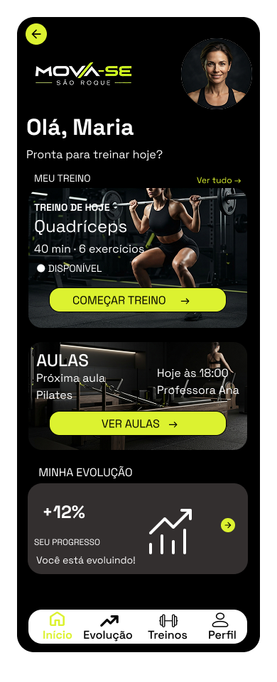
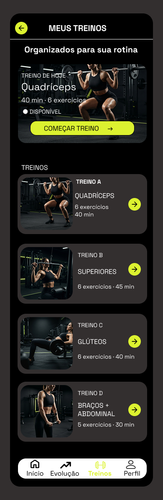
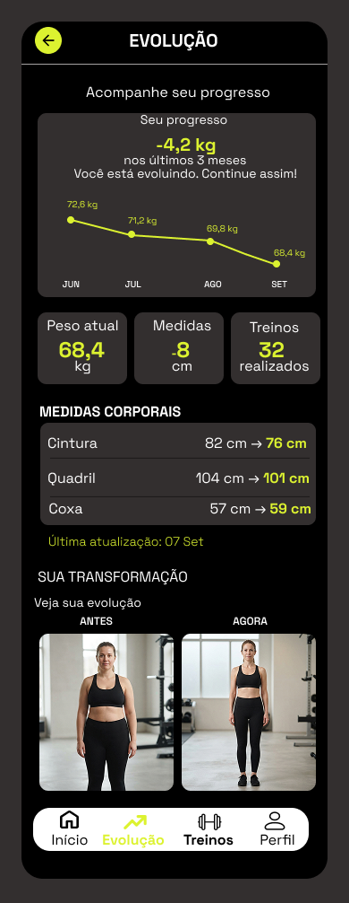
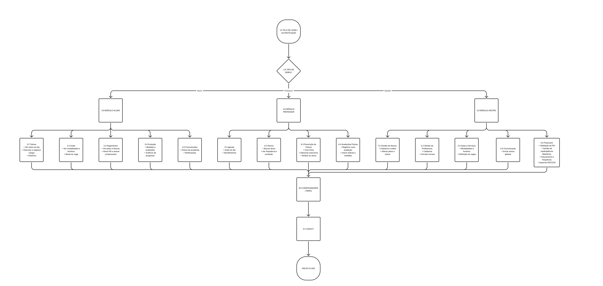
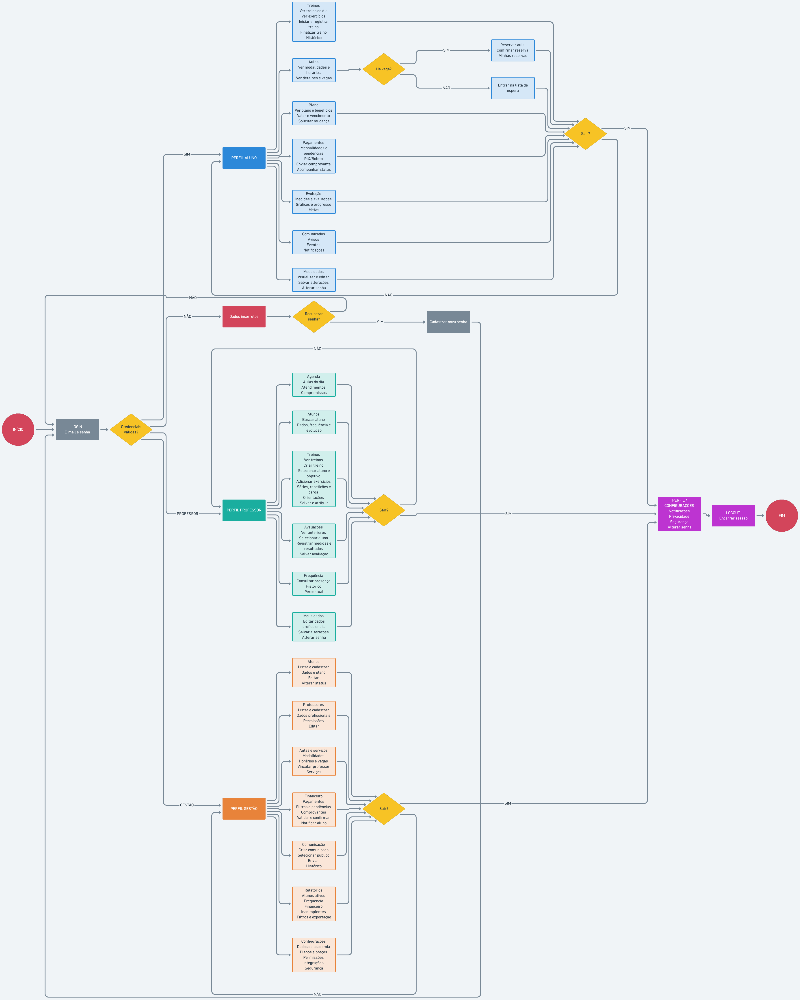

ALUNO
Treinos · evolução · aulas · pagamentos
CASE STUDY · UX/UI DESIGN
Redesenhando a experiência digital de uma academia
Uma proposta de aplicativo mobile para organizar treinos, aulas, evolução, pagamentos e gestão em uma única experiência.



01 / O projeto
A Academia MOVE-SR é uma proposta acadêmica de aplicativo mobile desenvolvida para organizar a experiência digital de uma academia e facilitar o acesso às principais informações por diferentes perfis de usuários.
Projeto acadêmico de UX/UI e prototipação. Não se trata de um aplicativo desenvolvido ou em funcionamento.
02 / O problema
Na rotina de uma academia, informações essenciais costumam ficar fragmentadas em canais e ferramentas diferentes. Cada perfil precisa de coisas distintas, e a soma dessas necessidades pode tornar a navegação confusa.
Como organizar diferentes necessidades dentro de um único aplicativo sem tornar a navegação complexa?
Pergunta de projeto
03 / Processo
Levantamento de necessidades e situações de uso.
Três perfis fictícios para orientar decisões.
Etapas de uso do aluno, do acesso ao plano.
Funcionais por perfil e não funcionais.
Hierarquia de conteúdos por perfil de acesso.
Caminhos principais de aluno, professor e gestão.
Estrutura e componentes antes do visual.
Cores, tipografia e componentes reutilizáveis.
Interface final para os três perfis.
Navegação interativa desenvolvida no Figma.
04 / Pesquisa exploratória
Pesquisa exploratória · perfis fictícios
O projeto contou com a elaboração de um questionário exploratório para levantar necessidades e situações de uso relacionadas aos diferentes perfis da academia. O instrumento não foi aplicado a usuários reais e foi utilizado como apoio às hipóteses de projeto.
Treinos · evolução · aulas · pagamentos
Alunos · treinos · avaliações · agenda
Alunos · financeiro · professores · turmas
05 / Personas
"Manter uma rotina de treino mesmo com pouco tempo disponível."
"Acompanhar alunos e atualizar treinos de forma prática."
"Visualizar as principais informações da academia em um único lugar."
Personas fictícias desenvolvidas para fins acadêmicos.
06 / Jornada do usuário
Acesso à conta.
Ver o treino do dia.
Acompanhar a execução.
Ver o histórico.
Ver horários e turmas.
Plano e pagamentos.
Professor e gestão possuem jornadas próprias: o professor acompanha alunos, treinos, avaliações e agenda; a gestão acompanha alunos, professores, financeiro e turmas.
07 / Requisitos
08 / Arquitetura da Informação
A arquitetura foi estruturada considerando os diferentes perfis de acesso e a hierarquia entre conteúdos e funcionalidades.

09 / User Flows

10 / Wireframes
Os wireframes foram desenvolvidos para estruturar a hierarquia das informações, os componentes e os caminhos de navegação antes da definição visual final.
11 / Design System
Space Grotesk
Treino de hoje
Sua evolução
Confira os horários das aulas e a lotação atual.
PRÓXIMA AULA
Iniciar treino
12 / Interface final
Uma experiência centrada no acompanhamento dos treinos, evolução, aulas e plano.
Uma interface voltada ao acompanhamento dos alunos, criação de treinos, avaliações e agenda.
Uma estrutura para gerenciamento de alunos, professores, financeiro, turmas e comunicação.
13 / Interações
Senha incorreta. Confira os dados ou recupere o acesso.
Toque no botão para ver a confirmação.
14 / Protótipo navegável
O protótipo navegável foi desenvolvido no Figma para representar os principais caminhos de interação do aplicativo.
ABRIR PROTÓTIPO NO FIGMA →15 / Resultado
16 / Aprendizados
Organizar a informação antes de desenhar ajudou a definir uma navegação mais coerente.
O projeto mostrou a importância de adaptar a navegação às necessidades de cada usuário.
O Design System ajudou a manter padrões visuais e de interação.
17 / Próximos passos
Ainda não realizados. São caminhos possíveis para evoluir o projeto além da prototipação.
Um projeto de UX/UI focado em organizar experiências, informações e interações.